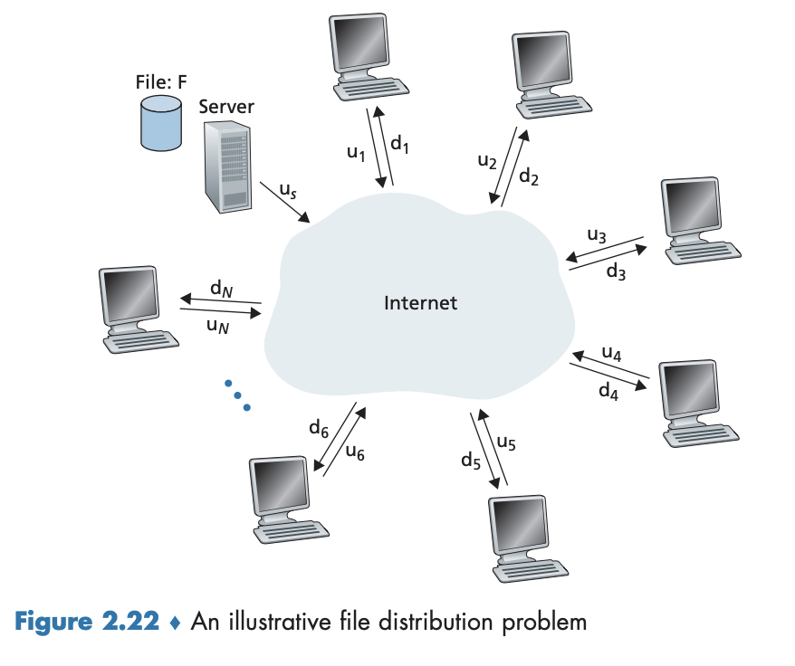
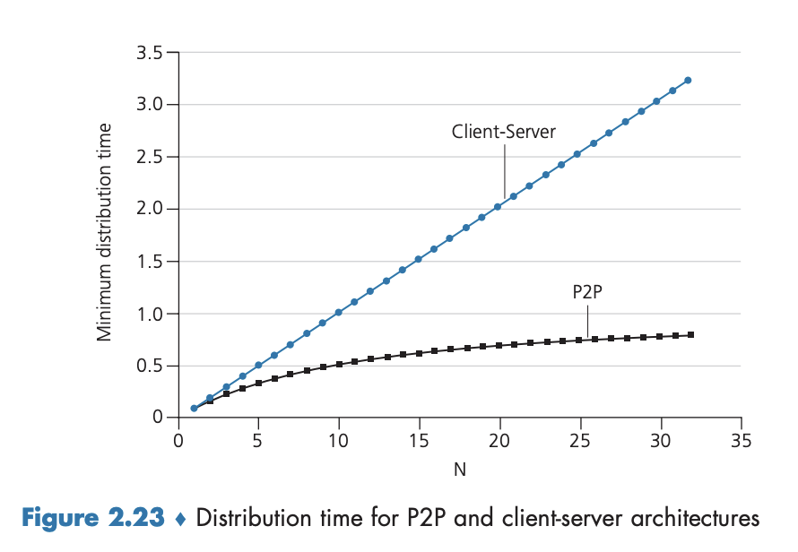
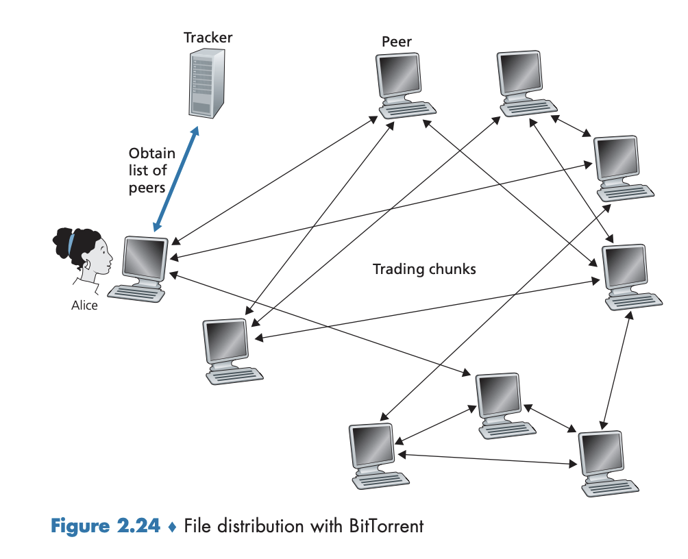

2.5 P2P 파일 분배
개요
지금까지 항상 켜져 있는 인프라스트럭처 서버에 상당히 의존하는 클라이언트-서버 구조를 살펴보았다. 이 절에서는 커다란 파일을 한 서버에서 다수의 호스트(피어라고 부름)로 분배하는 P2P 애플리케이션을 다룰 것이다.
P2P 구조의 확장성
클라이언트-서버 구조와 P2P 구조를 비교하기 위해, 그리고 P2P 고유의 자가 확장성을 설명하기 위해 두 가지 구조 유형에 대해 한 파일을 고정된 수의 피어들에게 분해하는 간단한 양적 모델을 고려한다.
클라이언트-서버 구조의 분배 시간

❓ 그림 2.22에 보이는 것처럼, 서버와 피어들은 접속 링크로 인터넷에 연결되어 있다. 서버의 접속 링크 업로드 속도를 $u_s$로 $i$번째 피어의 접속 링크 업로드 속도는 $u_i$로, 그리고 $i$번째 피어의 접속 링크 다운로드 속도는 $d_i$로 나타낸다. 또한 분배되는 파일의 크기는 $F$(비트), 파일의 복사본을 얻고자 하는 피어들의 수는 $N$으로 나타낸다.
- 분배 시간(distribution time): 모든 $N$개의 피어들이 파일의 복사본을 얻는 데 걸리는 시간
- 클라이언트-서버와 P2P 구조 모두의 경우, 인터넷 코어가 풍부한 대역폭을 갖고 있다는 간단한 가정을 하며, 모든 병목 현상은 네트워크 접속 부분에 있다. 클라이언트-서버는 다른 네트워크 애플리케이션에 참여하지 않아서 이 파일 분배에 모든 자원이 활용된다고 가정한다.
- 클라이언트-서버 분배 시간을 $D_{cs}$라고 하자.
- 서버는 파일 복사본을 $N$개의 피어 각각에게 전송해야 한다. 따라서 서버는 $NF$ 비트를 전송해야 한다. 서버의 업로드 속도가 $u_s$이기 때문에 파일을 분배하는 시간은 적어도 $NF/u_s$다.
- $d_\min$이 가장 낮은 다운로드 속도를 가진 피어의 다운로드 속도를 나타낸다고 하자. 즉 $d_\min=\min{d_1,d_2,\ldots,d_N}$이다. 가장 낮은 다운로드 속도를 가진 피어는 $F/d_\min$초보다 작은 시간에 파일의 모든 $F$비트를 얻을 수 없다. 따라서 최소 분배 시간은 적어도 $F/d_\min$이다.
- 이러한 관찰을 결합하면 다음 수식을 얻는다. 이는 클라이언트-서버 구조에 대한 최소 분배 시간의 하한값을 제공한다. $$D_{cs}\geq\max\left(\frac{NF}{u_s},\frac{F}{d_\min}\right)$$
- 위 하한값을 실제 분배 시간으로 채택할 수 있다. 즉, $$D_{cs}=\max\left(\frac{NF}{u_s},\frac{F}{d_\min}\right)$$
- $N$이 충분히 크다면, 클라이언트-서버 분배 시간은 $NF/u_s$에 비례하며, 선형적으로 분배 시간이 증가할 것이다.
P2P 구조의 분배 시간
❓ 그림 2.22에서 한 피어를 서버, 나머지 피어들을 클라이언트로 변형시킨 구조라고 생각해보자.
- 각 피어들이 서버가 파일을 분배하는 데 도움을 줄 수 있다.
- 한 피어가 파일 데이터 일부를 수신할 때, 피어는 그 데이터를 다른 피어들에게 재분배하는 데 자신의 업로드 용량을 이용할 수 있다.
- 분배 시간은 각 피어가 다른 피어들에게 파일의 일부를 어떻게 분배하느냐에 달려 있기에 조금 더 복잡하다.
- 서버는 적어도 한 번은 파일을 업로드 해야 한다. 나머지 피어들이 그들 사이에 이 비트를 재분배 할 수 있기 때문에 $N$은 여기서는 붙지 않는다. 따라서 최소 분배 시간은 $F/u_s$다.
- 가장 낮은 다운로드 속도를 가진 피어보다 적은 시간 안에 모든 $F$비트를 얻을 수 없다. 따라서 최소 분배 시간은 $F/d_\min$이다.
- 시스템의 전체 업로드 용량은 전체적으로 서버의 업로드 속도와 각 피어들의 속도를 더한 것이다. 즉 $u_\text{total}=u_s+u_1+\cdots+u_N$이다. 시스템은 $N$개 피어들 각각에게 $F$비트를 전달(업로드) 해야 한다. $u_\text{total}$보다 더 빠른 속도로 할 수는 없다. 따라서 최소 분배 시간은 $NF/(u_s+u_1+\cdots+u_N)$다.
- 이 세 가지 관찰을 결합하면, P2P에 대한 최소 분배 시간($D_\text{P2P}$로 표기)을 다음과 같이 얻을 수 있다. $$D_\text{P2P}\geq\max\left(\frac{F}{u_s},\frac{F}{d_\min},\frac{NF}{u_s+\sum_{i=1}^{N}u_i}\right)$$
- 각 피어가 비트를 수신하자마자 그 비트를 재분배할 수도 있지만 현실에서는 개별적인 비트보다는 파일의 청크(chunk)가 재분배된다. 위 식은 실제 최소 분배 시간에 대한 좋은 근삿값을 제공한다. $$D_\text{P2P}=\max\left(\frac{F}{u_s},\frac{F}{d_\min},\frac{NF}{u_s+\sum_{i=1}^{N}u_i}\right)$$
클라이언트-서버 구조 vs. P2P 구조
 그림 2.23은 모든 피어가 같은 업로드 속도 $u$를 갖고 있다고 가정하고 클라이언트-서버와 P2P 구조애 대한 최소 분배 시간을 비교하고 있다.
→ 여기서 $F/u=1$시간, $u_s=10u$, $d_\min\geq u_s$ 로 설정했다. 따라서 피어는 전체 파일을 한 시간 안에 보낼 수 있고, 서버 전송률은 피어 업로드 속도의 10배이며, 피어 다운로드 속도는 영향을 받지 않을 정도로 충분히 크게 설정된다.
→ 클라이언트-서버: 피어의 수가 증가함에 따라 분배 시간이 선형적으로 그리고 한계 없이 증가하는 것을 알 수 있다.
→ P2P: 최소 분배 시간이 클라이언트-서버 구조의 분배 시간보다 항상 작지는 않으나, 임의의 피어 수 $N$에 대해 한 시간보다 작다. 따라서 P2P 구조를 가진 애플리케이션은 자가 확장성을 갖는다. 이 확장성은 피어가 비트의 소비자이자 재분배자인 것의 직접적인 결과다.
비트토렌트
- 파일 분배를 위한 인기 있는 P2P 프로토콜
- 비트토렌트 용어로 특정 파일의 분배에 참여하는 모든 피어의 모임을
토렌트(torrent)라고 부른다.
청크(chunk)
- 토렌트에 참여하는 피어들은 서로에게서 같은 크기의
청크(chunk)를 다운로드한다(일반적으로 256KB). - 처음 토렌트에 가입한 피어에는 청크가 없지만 시간이 지남에 따라 점점 많은 청크를 쌓을 수 있다.
- 피어가 청크를 다운로드할 때 피어는 또한 청크를 다른 피어들에게 업로드한다.
- 일단 한 피어가 전체 파일을 얻으면, 토렌트를 (이기적으로) 떠날 수 있거나 혹은 (이타적으로) 토렌트에 남아서 다른 피어들로 청크를 계속해서 업로드할 수 있다.
- 어떤 피어는 일부 청크만을 가진 채로 토렌트를 떠날 수 있으며, 나중에 토렌트에 재가입할 수 있다.
비트토렌트의 동작
트래커(tracker)
- 각 토렌트는
트래커(tracker)라고 부르는 인프라스트럭처 노드를 갖고 있다. - 한 피어가 토렌트에 가입할 때 트래커에 자신을 등록하고 주기적으로 자신이 아직 토렌트에 있음을 알린다.
- 이러한 방식으로 트래커는 토렌트에 참여하는 피어들을 추적한다. 주어진 토렌트는 어느 순간에 수백 혹은 수천의 피어들이 참여하고 있을 수 있다.
동작 예시

그림 2.24에 보이는 것처럼, 새로운 피어 앨리스가 토렌트에 가입할 때를 생각해보자.
- 트래커는 참여하고 있는 피어 집합 중 임의로 50개를 선택하여 이들의 IP 주소를 앨리스에게 보낸다.
- 앨리스는 50개의 피어와 동시에 TCP 연결을 설정한다. → 성공적으로 연결된 피어는 ’이웃 피어’다.
- 시간이 지남에 따라 일부 피어는 떠나고 새로운 피어들이 앨리스와 TCP 연결을 시도한다.
- 임의의 주어진 시간에 각 피어들은 파일 청크들의 일부를 가지고 있고, 서로 다른 부분을 가지고 있을 것이다.
- 주기적으로 앨리스는 TCP 연결을 통해 이웃 피어들이 갖고 있는 청크 목록을 요구한다. ($L$개의 이웃을 갖고 있다면, 그녀는 $L$개의 청크 목록을 얻을 것이다). 그리고 가지고 있지 않은 청크에 대해 TCP 연결을 통해 요구한다.
❓ 그렇다면 이웃으로부터 어느 청크를 먼저 요구할 것이고, 이웃들 중 어느 피어에게 청크를 요청할 것인가?
가장 드문 것 먼저(rarest first) 기술
- 그녀가 가지고 있지 않은 청크 중에서, 이웃 가운데 가장 드문 청크를 결정하고 그것을 먼저 요구하는 것이다.
- 가장 드문 청크들이 더 빨리 재분배되므로 토렌트에 각 청크의 복사본 수가 대략적으로 동일해진다.
현명한 교역(wise trading) 알고리즘
가장 빠른 속도로 앨리스에게 데이터를 제공하는 이웃에게 우선순위를 주는 기법.- 예를 들어 가장 빠른 4개의 피어를 선정하고 10초마다 속도를 재계산하고 피어 집합을 수정한다.
- 이러한 4개의 피어를 활성화(unchoked) 되었다고 한다.
- 또한 30초마다 임의로 피어 하나를 추가로 선택하여 그것에게 청크를 보낼 수 있다.
- 임의로 선택된 피어를 밥이라고 하면 비트토렌트 용어로 밥은 낙관적으로 활성화(optimistically unchoked) 되었다고 한다.
- 앨리스는 밥의 4개 업로더 중 하나가 될 수 있으며 밥은 앨리스에게 데이터를 보내기 시작한다.
- 밥의 데이터 업로드 속도가 충분히 높으면 앨리스의 4개 업로더 중 하나가 될 수 있다.
- 앨리스는 30초마다 임의로 새로운 교역 파트너를 선택하고 그 파트너와 교역을 시작한다. 교역에 만족 시 서로를 4개의 목록에 넣고 더 좋은 파트너를 만날 때가지 교역을 계속한다.
- 총 5개 피어(4개의 ‘상위’ 피어와 하나의 탐색(probing) 피어)로 구성된다.
- 5개 피어외의 모든 이웃 피어는 비활성화(choked) 되었다고 하며, 앨리스로부터 어떠한 청크로 받지 않는다.
→ 위 두 방법은 서로 보완적으로 작용할 수 있다.
그 외의 용어와 기법
- 비트토렌트는 조각(pieces, 미니청크), 파이프라이닝(pipelining), 무작위 우선 선택(random first selection), 마지막 게임 모드(endgame mode), 안티스너빙(anti-snubbing) 등을 포함하는 흥미로운 기법을 갖고 있다.
TFT(Tit-For-Tat) 전략
- 문자 그대로 “당신이 나에게 한 대로 나도 돌려준다“는 의미
- 게임 이론에서 유래한 전략으로, 협력과 배반이 상호작용하는 상황에서 사용된다.
- 불공정한 피어(무임승차족, free-rider)는 걸러내고 협력적인 피어와의 상호작용을 통한 단순하고도 매우 효과적인 전략이다.